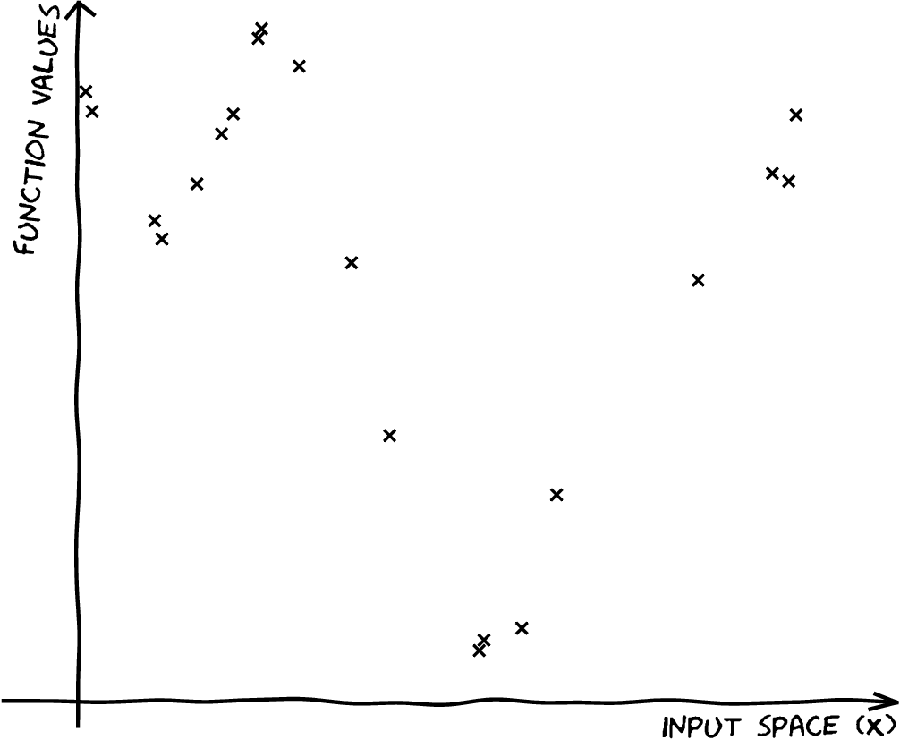
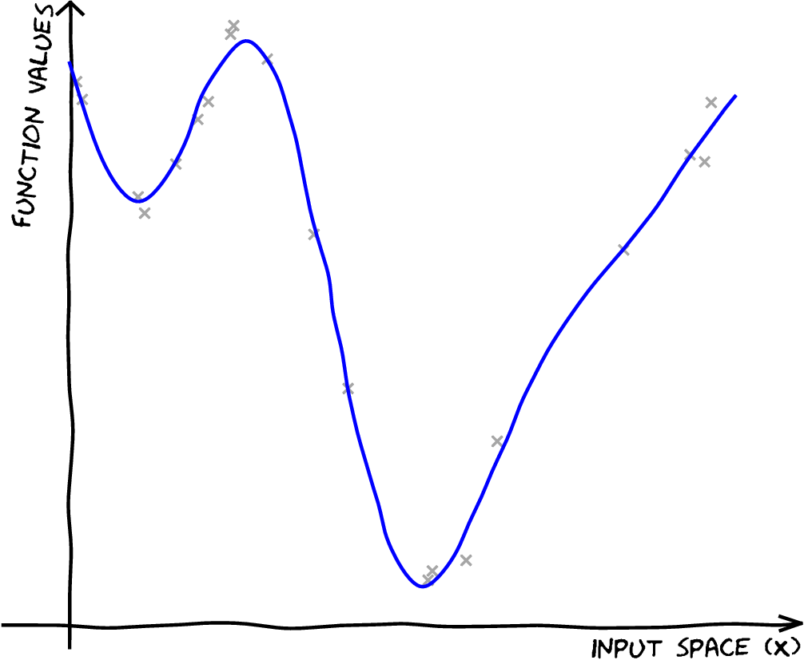
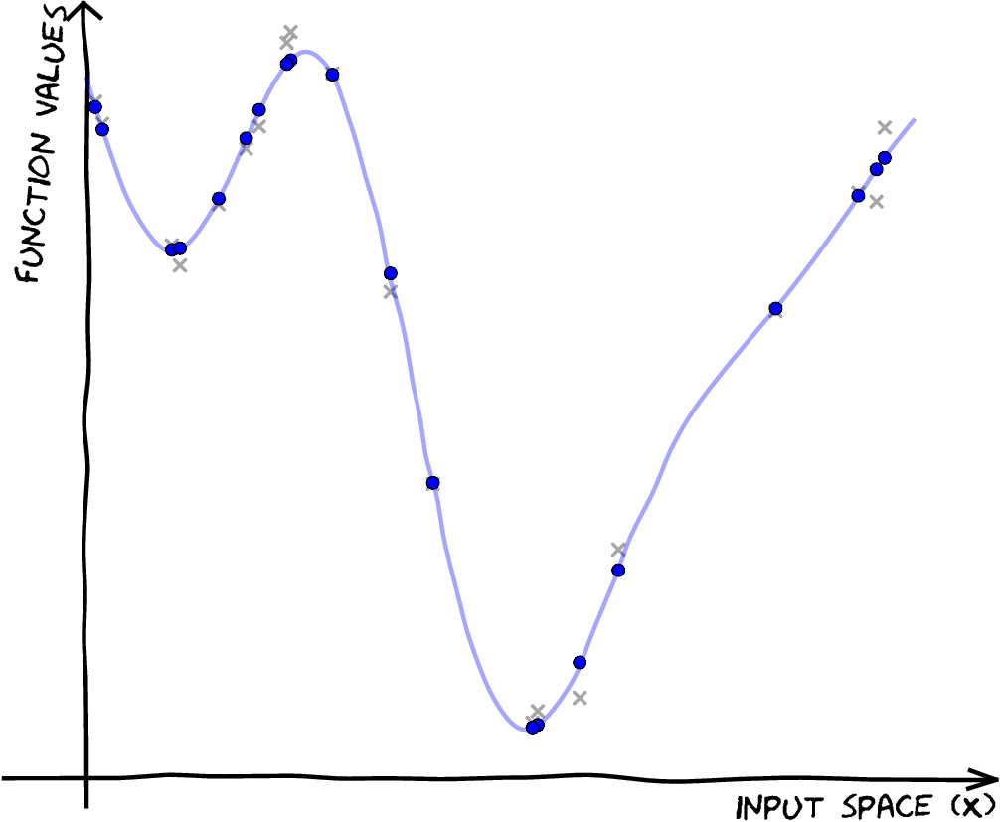
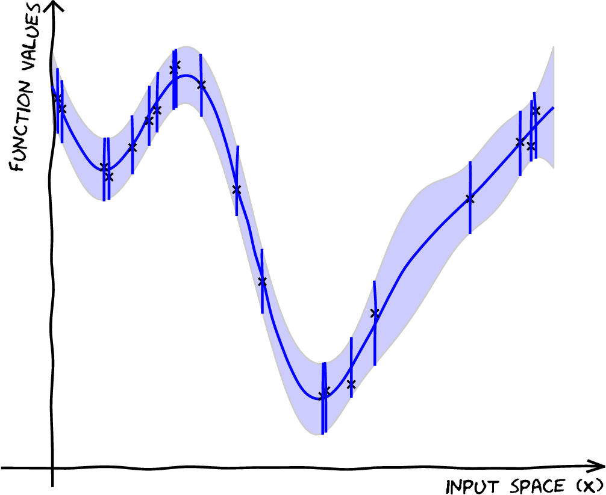

Approximate Gaussian Processes
Gaussian Process Summer School
Approximations
Approximations
Approximations
Approximations
Approximate Gaussian Processes
Low Rank Motivation
Inference in a GP has the following demands:
Complexity: \(\mathcal{O}(n^3)\) Storage: \(\mathcal{O}(n^2)\) Inference in a low rank GP has the following demands:
Complexity: \(\mathcal{O}(nm^2)\) Storage: \(\mathcal{O}(nm)\) where \(m\) is a user chosen parameter.
Snelson and Ghahramani (n.d.),Quiñonero Candela and Rasmussen (2005),Lawrence (n.d.),Titsias (n.d.),Bui et al. (2017)
Variational Compression
- Inducing variables are a compression of the real observations.
- They are like pseudo-data. They can be in space of \(\mathbf{ f}\) or a space that is related through a linear operator (Álvarez et al., 2010) — e.g. a gradient or convolution.
Variational Compression II
- Introduce inducing variables.
- Compress information into the inducing variables and avoid the need to store all the data.
- Allow for scaling e.g. stochastic variational Hensman et al. (n.d.) or parallelization Gal et al. (n.d.),Dai et al. (2014), Seeger et al. (2017)
Nonparametric Gaussian Processes
We’ve seen how we go from parametric to non-parametric.
The limit implies infinite dimensional \(\mathbf{ w}\).
Gaussian processes are generally non-parametric: combine data with covariance function to get model.
This representation cannot be summarized by a parameter vector of a fixed size.
The Parametric Bottleneck
Parametric models have a representation that does not respond to increasing training set size.
Bayesian posterior distributions over parameters contain the information about the training data.
Use Bayes’ rule from training data, \(p\left(\mathbf{ w}|\mathbf{ y}, \mathbf{X}\right)\),
Make predictions on test data \[p\left(y_*|\mathbf{X}_*, \mathbf{ y}, \mathbf{X}\right) = \int p\left(y_*|\mathbf{ w},\mathbf{X}_*\right)p\left(\mathbf{ w}|\mathbf{ y}, \mathbf{X})\text{d}\mathbf{ w}\right).\]
\(\mathbf{ w}\) becomes a bottleneck for information about the training set to pass to the test set.
Solution: increase \(m\) so that the bottleneck is so large that it no longer presents a problem.
How big is big enough for \(m\)? Non-parametrics says \(m\rightarrow \infty\).
The Parametric Bottleneck
- Now no longer possible to manipulate the model through the standard parametric form.
- However, it is possible to express parametric as GPs: \[k\left(\mathbf{ x}_i,\mathbf{ x}_j\right)=\phi_:\left(\mathbf{ x}_i\right)^\top\phi_:\left(\mathbf{ x}_j\right).\]
- These are known as degenerate covariance matrices.
- Their rank is at most \(m\), non-parametric models have full rank covariance matrices.
- Most well known is the “linear kernel”, \(k(\mathbf{ x}_i, \mathbf{ x}_j) = \mathbf{ x}_i^\top\mathbf{ x}_j\).
Making Predictions
- For non-parametrics prediction at new points \(\mathbf{ f}_*\) is made by conditioning on \(\mathbf{ f}\) in the joint distribution.
- In GPs this involves combining the training data with the covariance function and the mean function.
- Parametric is a special case when conditional prediction can be summarized in a fixed number of parameters.
- Complexity of parametric model remains fixed regardless of the size of our training data set.
- For a non-parametric model the required number of parameters grows with the size of the training data.
Information capture
- Everything we want to do with a GP involves marginalising \(\mathbf{ f}\)
- Predictions
- Marginal likelihood
- Estimating covariance parameters
- The posterior of \(\mathbf{ f}\) is the central object. This means inverting \(\mathbf{K}_{\mathbf{ f}\mathbf{ f}}\).
Nystr"om Method

\[ \mathbf{K}_{\mathbf{ f}\mathbf{ f}}\approx \mathbf{Q}_{\mathbf{ f}\mathbf{ f}}= \mathbf{K}_{\mathbf{ f}\mathbf{ u}}\mathbf{K}_{\mathbf{ u}\mathbf{ u}}^{-1}\mathbf{K}_{\mathbf{ u}\mathbf{ f}} \]
| \[\mathbf{X},\,\mathbf{ y}\] |

|
| \[\mathbf{X},\,\mathbf{ y}\] \[{\color{yellow} f(\mathbf{ x})} \sim {\mathcal GP}\] |

|
| \[\mathbf{X},\,\mathbf{ y}\] \[f(\mathbf{ x}) \sim {\mathcal GP}\]\[p({\color{yellow} \mathbf{ f}}) = \mathcal{N}\left(\mathbf{0},\mathbf{K}_{\mathbf{ f}\mathbf{ f}}\right)\] |

|
| \[ \mathbf{X},\,\mathbf{ y}\] \[f(\mathbf{ x}) \sim {\mathcal GP} \] \[ p(\mathbf{ f}) = \mathcal{N}\left(\mathbf{0},\mathbf{K}_{\mathbf{ f}\mathbf{ f}}\right) \] \[p( \mathbf{ f}|\mathbf{ y},\mathbf{X}) \] |

|
Introducing \(\mathbf{ u}\)
Take an extra \(m\) points on the function, \(\mathbf{ u}= f(\mathbf{Z})\). \[p(\mathbf{ y},\mathbf{ f},\mathbf{ u}) = p(\mathbf{ y}|\mathbf{ f}) p(\mathbf{ f}|\mathbf{ u}) p(\mathbf{ u})\]
Introducing \(\mathbf{ u}\)

Introducing \(\mathbf{ u}\)
Take and extra \(M\) points on the function, \(\mathbf{ u}= f(\mathbf{Z})\). \[p(\mathbf{ y},\mathbf{ f},\mathbf{ u}) = p(\mathbf{ y}|\mathbf{ f}) p(\mathbf{ f}|\mathbf{ u}) p(\mathbf{ u})\] \[\begin{aligned} p(\mathbf{ y}|\mathbf{ f}) &= \mathcal{N}\left(\mathbf{ y}|\mathbf{ f},\sigma^2 \mathbf{I}\right)\\ p(\mathbf{ f}|\mathbf{ u}) &= \mathcal{N}\left(\mathbf{ f}| \mathbf{K}_{\mathbf{ f}\mathbf{ u}}\mathbf{K}_{\mathbf{ u}\mathbf{ u}}^{-1}\mathbf{ u}, \tilde{\mathbf{K}}\right)\\ p(\mathbf{ u}) &= \mathcal{N}\left(\mathbf{ u}| \mathbf{0},\mathbf{K}_{\mathbf{ u}\mathbf{ u}}\right) \end{aligned}\]
| \[\mathbf{X},\,\mathbf{ y}\] \[f(\mathbf{ x}) \sim {\mathcal GP}\] \[p(\mathbf{ f}) = \mathcal{N}\left(\mathbf{0},\mathbf{K}_{\mathbf{ f}\mathbf{ f}}\right)\] \[p(\mathbf{ f}|\mathbf{ y},\mathbf{X})\] |
|
\[ \begin{align} &\qquad\mathbf{Z}, \mathbf{ u}\\ &p({\color{red} \mathbf{ u}}) = \mathcal{N}\left(\mathbf{0},\mathbf{K}_{\mathbf{ u}\mathbf{ u}}\right)\end{align} \]
| \[\mathbf{X},\,\mathbf{ y}\] \[f(\mathbf{ x}) \sim {\mathcal GP}\] \[p(\mathbf{ f}) = \mathcal{N}\left(\mathbf{0},\mathbf{K}_{\mathbf{ f}\mathbf{ f}}\right)\] \[p(\mathbf{ f}|\mathbf{ y},\mathbf{X})\] \[p(\mathbf{ u}) = \mathcal{N}\left(\mathbf{0},\mathbf{K}_{\mathbf{ u}\mathbf{ u}}\right)\] \[\widetilde p({\color{red}\mathbf{ u}}|\mathbf{ y},\mathbf{X})\] |

|
The alternative posterior
Instead of doing \[ p(\mathbf{ f}|\mathbf{ y},\mathbf{X}) = \frac{p(\mathbf{ y}|\mathbf{ f})p(\mathbf{ f}|\mathbf{X})}{\int p(\mathbf{ y}|\mathbf{ f})p(\mathbf{ f}|\mathbf{X}){\text{d}\mathbf{ f}}} \] We’ll do \[ p(\mathbf{ u}|\mathbf{ y},\mathbf{Z}) = \frac{p(\mathbf{ y}|\mathbf{ u})p(\mathbf{ u}|\mathbf{Z})}{\int p(\mathbf{ y}|\mathbf{ u})p(\mathbf{ u}|\mathbf{Z}){\text{d}\mathbf{ u}}} \]
Parametric but Non-parametric
- Augment with a vector of inducing variables, \(\mathbf{ u}\).
- Form a variational lower bound on true likelihood.
- Bound factorizes given inducing variables.
- Inducing variables appear in bound similar to parameters in a parametric model.
- But number of inducing variables can be changed at run time.
Inducing Variable Approximations
- Date back to {Williams and Seeger (n.d.); Smola and Bartlett (n.d.); Csató and Opper (2002); Seeger et al. (n.d.); Snelson and Ghahramani (n.d.)}. See {Quiñonero Candela and Rasmussen (2005); Bui et al. (2017)} for reviews.
- We follow variational perspective of {Titsias (n.d.)}.
- This is an augmented variable method, followed by a collapsed variational approximation {King and Lawrence (n.d.); Hensman et al. (2012)}.
Augmented Variable Model: Not Wrong but Useful?
Variational Bound on \(p(\mathbf{ y}|\mathbf{ u})\)
\[ \begin{aligned} \log p(\mathbf{ y}|\mathbf{ u}) & = \log \int p(\mathbf{ y}|\mathbf{ f}) p(\mathbf{ f}|\mathbf{ u}) \text{d}\mathbf{ f}\\ & = \int q(\mathbf{ f}) \log \frac{p(\mathbf{ y}|\mathbf{ f}) p(\mathbf{ f}|\mathbf{ u})}{q(\mathbf{ f})}\text{d}\mathbf{ f}+ \text{KL}\left( q(\mathbf{ f})\,\|\,p(\mathbf{ f}|\mathbf{ y}, \mathbf{ u}) \right). \end{aligned} \]
Choose form for \(q(\cdot)\)
- Set \(q(\mathbf{ f})=p(\mathbf{ f}|\mathbf{ u})\), \[ \log p(\mathbf{ y}|\mathbf{ u}) \geq \int p(\mathbf{ f}|\mathbf{ u}) \log p(\mathbf{ y}|\mathbf{ f})\text{d}\mathbf{ f}. \] \[ p(\mathbf{ y}|\mathbf{ u}) \geq \exp \int p(\mathbf{ f}|\mathbf{ u}) \log p(\mathbf{ y}|\mathbf{ f})\text{d}\mathbf{ f}. \] (Titsias, n.d.)
Optimal Compression in Inducing Variables
Maximizing lower bound minimizes the KL divergence (information gain): \[ \text{KL}\left( p(\mathbf{ f}|\mathbf{ u})\,\|\,p(\mathbf{ f}|\mathbf{ y}, \mathbf{ u}) \right) = \int p(\mathbf{ f}|\mathbf{ u}) \log \frac{p(\mathbf{ f}|\mathbf{ u})}{p(\mathbf{ f}|\mathbf{ y}, \mathbf{ u})}\text{d}\mathbf{ u} \]
This is minimized when the information stored about \(\mathbf{ y}\) is stored already in \(\mathbf{ u}\).
The bound seeks an optimal compression from the information gain perspective.
If \(\mathbf{ u}= \mathbf{ f}\) bound is exact (\(\mathbf{ f}\) \(d\)-separates \(\mathbf{ y}\) from \(\mathbf{ u}\)).
Choice of Inducing Variables
- Free to choose whatever heuristics for the inducing variables.
- Can quantify which heuristics perform better through checking lower bound.
\[ \begin{bmatrix} \mathbf{ f}\\ \mathbf{ u} \end{bmatrix} \sim \mathcal{N}\left(\mathbf{0},\mathbf{K}\right) \] with \[ \mathbf{K}= \begin{bmatrix} \mathbf{K}_{\mathbf{ f}\mathbf{ f}}& \mathbf{K}_{\mathbf{ f}\mathbf{ u}}\\ \mathbf{K}_{\mathbf{ u}\mathbf{ f}}& \mathbf{K}_{\mathbf{ u}\mathbf{ u}} \end{bmatrix} \]
Variational Compression
- Inducing variables are a compression of the real observations.
- They are like pseudo-data. They can be in space of \(\mathbf{ f}\) or a space that is related through a linear operator (Álvarez et al., 2010) — e.g. a gradient or convolution.
Variational Compression II
- Resulting algorithms reduce computational complexity.
- Also allow deployment of more standard scaling techniques.
- E.g. Stochastic variational inference Hoffman et al. (2012)
- Allow for scaling e.g. stochastic variational Hensman et al. (n.d.) or parallelization (Dai et al., 2014; Gal et al., n.d.; Seeger et al., 2017)
Factorizing Likelihoods
If the likelihood, \(p(\mathbf{ y}|\mathbf{ f})\), factorizes
<8-> Then the bound factorizes.
<10-> Now need a choice of distributions for \(\mathbf{ f}\) and \(\mathbf{ y}|\mathbf{ f}\) …
Inducing Variables
- Choose to go a different way.
- Introduce a set of auxiliary variables, \(\mathbf{ u}\), which are \(m\) in length.
- They are like “artificial data”.
- Used to induce a distribution: \(q(\mathbf{ u}|\mathbf{ y})\)
Making Parameters non-Parametric
Introduce variable set which is finite dimensional. \[ p(\mathbf{ y}^*|\mathbf{ y}) \approx \int p(\mathbf{ y}^*|\mathbf{ u}) q(\mathbf{ u}|\mathbf{ y}) \text{d}\mathbf{ u} \]
But dimensionality of \(\mathbf{ u}\) can be changed to improve approximation.
Variational Compression
- Model for our data, \(\mathbf{ y}\)
\[p(\mathbf{ y})\]
Variational Compression
- Prior density over \(\mathbf{ f}\). Likelihood relates data, \(\mathbf{ y}\), to \(\mathbf{ f}\).
\[p(\mathbf{ y})=\int p(\mathbf{ y}|\mathbf{ f})p(\mathbf{ f})\text{d}\mathbf{ f}\]
Variational Compression
- Prior density over \(\mathbf{ f}\). Likelihood relates data, \(\mathbf{ y}\), to \(\mathbf{ f}\).
\[p(\mathbf{ y})=\int p(\mathbf{ y}|\mathbf{ f})p(\mathbf{ u}|\mathbf{ f})p(\mathbf{ f})\text{d}\mathbf{ f}\text{d}\mathbf{ u}\]
Variational Compression
| \[p(\mathbf{ y})=\int \int p(\mathbf{ y}|\mathbf{ f})p(\mathbf{ f}|\mathbf{ u})\text{d}\mathbf{ f}p(\mathbf{ u})\text{d}\mathbf{ u}\] |
Variational Compression
| \[p(\mathbf{ y})=\int \int p(\mathbf{ y}|\mathbf{ f})p(\mathbf{ f}|\mathbf{ u})\text{d}\mathbf{ f}p(\mathbf{ u})\text{d}\mathbf{ u}\] |
Variational Compression
| \[p(\mathbf{ y}|\mathbf{ u})=\int p(\mathbf{ y}|\mathbf{ f})p(\mathbf{ f}|\mathbf{ u})\text{d}\mathbf{ f}\] |
Variational Compression
| \[p(\mathbf{ y}|\mathbf{ u})\] |
Variational Compression
| \[p(\mathbf{ y}|\boldsymbol{ \theta})\] |
Compression
- Replace true \(p(\mathbf{ u}|\mathbf{ y})\) with approximation \(q(\mathbf{ u}|\mathbf{ y})\).
- Minimize KL divergence between approximation and truth.
- This is similar to the Bayesian posterior distribution.
- But it’s placed over a set of ‘pseudo-observations’.
\[\mathbf{ f}, \mathbf{ u}\sim \mathcal{N}\left(\mathbf{0},\begin{bmatrix}\mathbf{K}_{\mathbf{ f}\mathbf{ f}}& \mathbf{K}_{\mathbf{ f}\mathbf{ u}}\\\mathbf{K}_{\mathbf{ u}\mathbf{ f}}& \mathbf{K}_{\mathbf{ u}\mathbf{ u}}\end{bmatrix}\right)\] \[\mathbf{ y}|\mathbf{ f}= \prod_{i} \mathcal{N}\left(f,\sigma^2\right)\]
Gaussian \(p(y_i|f_i)\)
For Gaussian likelihoods:
Gaussian Process Over \(\mathbf{ f}\) and \(\mathbf{ u}\)
Define: \[q_{i, i} = \text{var}_{p(f_i|\mathbf{ u})}\left( f_i \right) = \left<f_i^2\right>_{p(f_i|\mathbf{ u})} - \left<f_i\right>_{p(f_i|\mathbf{ u})}^2\] We can write: \[c_i = \exp\left(-{\frac{q_{i,i}}{2\sigma^2}}\right)\] If joint distribution of \(p(\mathbf{ f}, \mathbf{ u})\) is Gaussian then: \[q_{i, i} = k_{i, i} - \mathbf{ k}_{i, \mathbf{ u}}^\top \mathbf{K}_{\mathbf{ u}, \mathbf{ u}}^{-1} \mathbf{ k}_{i, \mathbf{ u}}\]
\(c_i\) is not a function of \(\mathbf{ u}\) but is a function of \(\mathbf{X}_\mathbf{ u}\).
Total Conditional Variance
The sum of \(q_{i,i}\) is the total conditional variance.
If conditional density \(p(\mathbf{ f}|\mathbf{ u})\) is Gaussian then it has covariance \[\mathbf{Q} = \mathbf{K}_{\mathbf{ f}\mathbf{ f}} - \mathbf{K}_{\mathbf{ f}\mathbf{ u}}\mathbf{K}_{\mathbf{ u}\mathbf{ u}}^{-1} \mathbf{K}_{\mathbf{ u}\mathbf{ f}}\]
\(\text{tr}\left(\mathbf{Q}\right) = \sum_{i}q_{i,i}\) is known as total variance.
Because it is on conditional distribution we call it total conditional variance.
Capacity of a Density
Measure the ’capacity of a density’.
Determinant of covariance represents ’volume’ of density.
log determinant is entropy: sum of log eigenvalues of covariance.
trace of covariance is total variance: sum of eigenvalues of covariance.
\(\lambda > \log \lambda\) then total conditional variance upper bounds entropy.
Alternative View
Exponentiated total variance bounds determinant. \[\det{\mathbf{Q}} < \exp \text{tr}\left(\mathbf{Q}\right)\] Because \[\prod_{i=1}^k \lambda_i < \prod_{i=1}^k \exp(\lambda_i)\] where \(\{\lambda_i\}_{i=1}^k\) are the positive eigenvalues of \(\mathbf{Q}\) This in turn implies \[\det{\mathbf{Q}} < \prod_{i=1}^k \exp\left(q_{i,i}\right)\]
Communication Channel
Conditional density \(p(\mathbf{ f}|\mathbf{ u})\) can be seen as a communication channel.
Normally we have: \[\text{Transmitter} \stackrel{\mathbf{ u}}{\rightarrow} \begin{smallmatrix}p(\mathbf{ f}|\mathbf{ u}) \\ \text{Channel}\end{smallmatrix} \stackrel{\mathbf{ f}}{\rightarrow} \text{Receiver}\] and we control \(p(\mathbf{ u})\) (the source density).
Here we can also control the transmission channel \(p(\mathbf{ f}|\mathbf{ u})\).
Lower Bound on Likelihood
Substitute variational bound into marginal likelihood: \[p(\mathbf{ y})\geq \prod_{i=1}^nc_i \int \mathcal{N}\left(\mathbf{ y}|\left<\mathbf{ f}\right>,\sigma^2\mathbf{I}\right)p(\mathbf{ u}) \text{d}\mathbf{ u}\] Note that: \[\left<\mathbf{ f}\right>_{p(\mathbf{ f}|\mathbf{ u})} = \mathbf{K}_{\mathbf{ f}, \mathbf{ u}} \mathbf{K}_{\mathbf{ u}, \mathbf{ u}}^{-1}\mathbf{ u}\] is linearly dependent on \(\mathbf{ u}\).
Deterministic Training Conditional
Making the marginalization of \(\mathbf{ u}\) straightforward. In the Gaussian case: \[p(\mathbf{ u}) = \mathcal{N}\left(\mathbf{ u}|\mathbf{0},\mathbf{K}_{\mathbf{ u},\mathbf{ u}}\right)\]
Variational marginalisation of \(\mathbf{ f}\)
\[\log p(\mathbf{ y}|\mathbf{ u}) = \log\int p(\mathbf{ y}|\mathbf{ f})p(\mathbf{ f}|\mathbf{ u},\mathbf{X})\text{d}\mathbf{ f}\]
\[\log p(\mathbf{ y}|\mathbf{ u}) = \log \mathbb{E}_{p(\mathbf{ f}|\mathbf{ u},\mathbf{X})}\left[p(\mathbf{ y}|\mathbf{ f})\right]\] \[\log p(\mathbf{ y}|\mathbf{ u}) \geq \mathbb{E}_{p(\mathbf{ f}|\mathbf{ u},\mathbf{X})}\left[\log p(\mathbf{ y}|\mathbf{ f})\right]\triangleq \log\widetilde p(\mathbf{ y}|\mathbf{ u})\]
No inversion of \(\mathbf{K}_{\mathbf{ f}\mathbf{ f}}\) required
Variational marginalisation of \(\mathbf{ f}\) (another way)
Titsias (n.d.) \[p(\mathbf{ y}|\mathbf{ u}) = \frac{p(\mathbf{ y}|\mathbf{ f})p(\mathbf{ f}|\mathbf{ u})}{p(\mathbf{ f}|\mathbf{ y}, \mathbf{ u})}\] \[\log p(\mathbf{ y}|\mathbf{ u}) = \log p(\mathbf{ y}|\mathbf{ f}) + \log \frac{p(\mathbf{ f}|\mathbf{ u})}{p(\mathbf{ f}|\mathbf{ y}, \mathbf{ u})}\] \[\log p(\mathbf{ y}|\mathbf{ u}) = \bbE_{p(\mathbf{ f}|\mathbf{ u})}\big[\log p(\mathbf{ y}|\mathbf{ f})\big] + \bbE_{p(\mathbf{ f}|\mathbf{ u})}\big[\log \frac{p(\mathbf{ f}|\mathbf{ u})}{p(\mathbf{ f}|\mathbf{ y}, \mathbf{ u})}\big]\] \[\log p(\mathbf{ y}|\mathbf{ u}) = \widetilde p(\mathbf{ y}|\mathbf{ u}) + \textsc{KL}[p(\mathbf{ f}|\mathbf{ u})||p(\mathbf{ f}|\mathbf{ y}, \mathbf{ u})]\]
No inversion of \(\mathbf{K}_{\mathbf{ f}\mathbf{ f}}\) required
A Lower Bound on the Likelihood
\[\widetilde p(\mathbf{ y}|\mathbf{ u}) = \prod_{i=1}^n\widetilde p(y_i|\mathbf{ u})\] \[\widetilde p(y|\mathbf{ u}) = \mathcal{N}\left(y|\mathbf{ k}_{fu}\mathbf{K}_{\mathbf{ u}\mathbf{ u}}^{-1}\mathbf{ u},\sigma^2\right) \,{\color{red}\exp\left\{-\tfrac{1}{2\sigma^2}\left(k_{ff}- \mathbf{ k}_{fu}\mathbf{K}_{\mathbf{ u}\mathbf{ u}}^{-1}\mathbf{ k}_{uf}\right)\right\}}\]
A straightforward likelihood approximation, and a penalty term
Now we can marginalise \(\mathbf{ u}\)
\[\widetilde p(\mathbf{ u}|\mathbf{ y},\mathbf{Z}) = \frac{\widetilde p(\mathbf{ y}|\mathbf{ u})p(\mathbf{ u}|\mathbf{Z})}{\int \widetilde p(\mathbf{ y}|\mathbf{ u})p(\mathbf{ u}|\mathbf{Z})\text{d}{\mathbf{ u}}}\]
Computing the posterior costs \(\mathcal{O}(nm^2)\)
We also get a lower bound of the marginal likelihood
What does the penalty term do?
\[{\color{red}\sum_{i=1}^n-\tfrac{1}{2\sigma^2}\left(k_{ff}- \mathbf{ k}_{fu}\mathbf{K}_{\mathbf{ u}\mathbf{ u}}^{-1}\mathbf{ k}_{uf}\right)}\]
What does the penalty term do?
\[{\color{red}\sum_{i=1}^n-\tfrac{1}{2\sigma^2}\left(k_{ff}- \mathbf{ k}_{fu}\mathbf{K}_{\mathbf{ u}\mathbf{ u}}^{-1}\mathbf{ k}_{uf}\right)}\]
What does the penalty term do?
How good is the inducing approximation?
It’s easy to show that as \(\mathbf{Z}\to \mathbf{X}\):
\(\mathbf{ u}\to \mathbf{ f}\) (and the posterior is exact)
The penalty term is zero.
The cost returns to \(\mathcal{O}(n^3)\)
Predictions
Recap
So far we:
introduced \(\mathbf{Z}, \mathbf{ u}\)
approximated the intergral over \(\mathbf{ f}\) variationally
captured the information in \(\widetilde p(\mathbf{ u}|\mathbf{ y})\)
obtained a lower bound on the marginal likeihood
saw the effect of the penalty term
prediction for new points
Omitted details:
optimization of the covariance parameters using the bound
optimization of Z (simultaneously)
the form of \(\widetilde p(\mathbf{ u}|\mathbf{ y})\)
historical approximations
Other approximations
Subset selection Lawrence et al. (n.d.)
Random or systematic
Set \(\mathbf{Z}\) to subset of \(\mathbf{X}\)
Set \(\mathbf{ u}\) to subset of \(\mathbf{ f}\)
Approximation to \(p(\mathbf{ y}|\mathbf{ u})\):
$ p(_i) = p(_i_i) i$
$ p(_i) = 1 i$
Other approximations
Quiñonero Candela and Rasmussen (2005) {Deterministic Training Conditional (DTC)}
Approximation to \(p(\mathbf{ y}|\mathbf{ u})\):
- $ p(_i) = (_i, [_i])$
As our variational formulation, but without penalty
Optimization of \(\mathbf{Z}\) is difficult
Other approximations
Fully Independent Training Conditional Snelson and Ghahramani (n.d.)
Approximation to \(p(\mathbf{ y}|\mathbf{ u})\):
$ p() = _i p(_i) $
Optimization of \(\mathbf{Z}\) is still difficult, and there are some weird heteroscedatic effects
Selecting Data Dimensionality
- GP-LVM Provides probabilistic non-linear dimensionality reduction.
- How to select the dimensionality?
- Need to estimate marginal likelihood.
- In standard GP-LVM it increases with increasing \(q\).
Integrate Mapping Function and Latent Variables
|
Bayesian GP-LVM
|
|
Standard Variational Approach Fails
- Standard variational bound has the form: \[ \mathcal{L}= \left<\log p(\mathbf{ y}|\mathbf{Z})\right>_{q(\mathbf{Z})} + \text{KL}\left( q(\mathbf{Z})\,\|\,p(\mathbf{Z}) \right) \]
Standard Variational Approach Fails
- Requires expectation of \(\log p(\mathbf{ y}|\mathbf{Z})\) under \(q(\mathbf{Z})\). \[ \begin{align} \log p(\mathbf{ y}|\mathbf{Z}) = & -\frac{1}{2}\mathbf{ y}^\top\left(\mathbf{K}_{\mathbf{ f}, \mathbf{ f}}+\sigma^2\mathbf{I}\right)^{-1}\mathbf{ y}\\ & -\frac{1}{2}\log \det{\mathbf{K}_{\mathbf{ f}, \mathbf{ f}}+\sigma^2 \mathbf{I}} -\frac{n}{2}\log 2\pi \end{align} \] \(\mathbf{K}_{\mathbf{ f}, \mathbf{ f}}\) is dependent on \(\mathbf{Z}\) and it appears in the inverse.
Variational Bayesian GP-LVM
- Consider collapsed variational bound, \[ p(\mathbf{ y})\geq \prod_{i=1}^nc_i \int \mathcal{N}\left(\mathbf{ y}|\left<\mathbf{ f}\right>,\sigma^2\mathbf{I}\right)p(\mathbf{ u}) \text{d}\mathbf{ u} \] \[ p(\mathbf{ y}|\mathbf{Z})\geq \prod_{i=1}^nc_i \int \mathcal{N}\left(\mathbf{ y}|\left<\mathbf{ f}\right>_{p(\mathbf{ f}|\mathbf{ u}, \mathbf{Z})},\sigma^2\mathbf{I}\right)p(\mathbf{ u}) \text{d}\mathbf{ u} \] \[ \int p(\mathbf{ y}|\mathbf{Z})p(\mathbf{Z}) \text{d}\mathbf{Z}\geq \int \prod_{i=1}^nc_i \mathcal{N}\left(\mathbf{ y}|\left<\mathbf{ f}\right>_{p(\mathbf{ f}|\mathbf{ u}, \mathbf{Z})},\sigma^2\mathbf{I}\right) p(\mathbf{Z})\text{d}\mathbf{Z}p(\mathbf{ u}) \text{d}\mathbf{ u} \]
Variational Bayesian GP-LVM
- Apply variational lower bound to the inner integral. \[ \begin{align} \int \prod_{i=1}^nc_i \mathcal{N}\left(\mathbf{ y}|\left<\mathbf{ f}\right>_{p(\mathbf{ f}|\mathbf{ u}, \mathbf{Z})},\sigma^2\mathbf{I}\right) p(\mathbf{Z})\text{d}\mathbf{Z}\geq & \left<\sum_{i=1}^n\log c_i\right>_{q(\mathbf{Z})}\\ & +\left<\log\mathcal{N}\left(\mathbf{ y}|\left<\mathbf{ f}\right>_{p(\mathbf{ f}|\mathbf{ u}, \mathbf{Z})},\sigma^2\mathbf{I}\right)\right>_{q(\mathbf{Z})}\\& + \text{KL}\left( q(\mathbf{Z})\,\|\,p(\mathbf{Z}) \right) \end{align} \]
- Which is analytically tractable for Gaussian \(q(\mathbf{Z})\) and some covariance functions.
Required Expectations
- Need expectations under \(q(\mathbf{Z})\) of: \[ \log c_i = \frac{1}{2\sigma^2} \left[k_{i, i} - \mathbf{ k}_{i, \mathbf{ u}}^\top \mathbf{K}_{\mathbf{ u}, \mathbf{ u}}^{-1} \mathbf{ k}_{i, \mathbf{ u}}\right] \] and \[ \log \mathcal{N}\left(\mathbf{ y}|\left<\mathbf{ f}\right>_{p(\mathbf{ f}|\mathbf{ u},\mathbf{Y})},\sigma^2\mathbf{I}\right) = -\frac{1}{2}\log 2\pi\sigma^2 - \frac{1}{2\sigma^2}\left(y_i - \mathbf{K}_{\mathbf{ f}, \mathbf{ u}}\mathbf{K}_{\mathbf{ u},\mathbf{ u}}^{-1}\mathbf{ u}\right)^2 \]
Required Expectations
- This requires the expectations \[ \left<\mathbf{K}_{\mathbf{ f},\mathbf{ u}}\right>_{q(\mathbf{Z})} \] and \[ \left<\mathbf{K}_{\mathbf{ f},\mathbf{ u}}\mathbf{K}_{\mathbf{ u},\mathbf{ u}}^{-1}\mathbf{K}_{\mathbf{ u},\mathbf{ f}}\right>_{q(\mathbf{Z})} \] which can be computed analytically for some covariance functions (Damianou et al., 2016) or through sampling (Damianou, 2015; Salimbeni and Deisenroth, 2017).
Variational Compression
Damianou and Lawrence (2013)
Augment each layer with inducing variables \(\mathbf{ u}_i\).
Apply variational compression, \[\begin{align} p(\mathbf{ y}, \{\mathbf{ h}_i\}_{i=1}^{\ell-1}|\{\mathbf{ u}_i\}_{i=1}^{\ell}, \mathbf{X}) \geq & \tilde p(\mathbf{ y}|\mathbf{ u}_{\ell}, \mathbf{ h}_{\ell-1})\prod_{i=2}^{\ell-1} \tilde p(\mathbf{ h}_i|\mathbf{ u}_i,\mathbf{ h}_{i-1}) \tilde p(\mathbf{ h}_1|\mathbf{ u}_i,\mathbf{X}) \nonumber \\ & \times \exp\left(\sum_{i=1}^\ell-\frac{1}{2\sigma^2_i}\text{tr}\left(\boldsymbol{ \Sigma}_{i}\right)\right) \label{eq:deep_structure} \end{align}\] where \[\tilde p(\mathbf{ h}_i|\mathbf{ u}_i,\mathbf{ h}_{i-1}) = \mathcal{N}\left(\mathbf{ h}_i|\mathbf{K}_{\mathbf{ h}_{i}\mathbf{ u}_{i}}\mathbf{K}_{\mathbf{ u}_i\mathbf{ u}_i}^{-1}\mathbf{ u}_i,\sigma^2_i\mathbf{I}\right).\]
Nested Variational Compression
Hensman and Lawrence (2014)
By sustaining explicity distributions over inducing variables James Hensman has developed a nested variant of variational compression.
Exciting thing: it mathematically looks like a deep neural network, but with inducing variables in the place of basis functions.
Additional complexity control term in the objective function.
Nested Bound
\[\begin{align} \log p(\mathbf{ y}|\mathbf{X}) \geq & % -\frac{1}{\sigma_1^2} \text{tr}\left(\boldsymbol{ \Sigma}_1\right) % -\sum_{i=2}^\ell\frac{1}{2\sigma_i^2} \left(\psi_{i} % - \text{tr}\left({\boldsymbol \Phi}_{i}\mathbf{K}_{\mathbf{ u}_{i} \mathbf{ u}_{i}}^{-1}\right)\right) \nonumber \\ % & - \sum_{i=1}^{\ell}\text{KL}\left( q(\mathbf{ u}_i)\,\|\,p(\mathbf{ u}_i) \right) \nonumber \\ % & - \sum_{i=2}^{\ell}\frac{1}{2\sigma^2_{i}}\text{tr}\left(({\boldsymbol \Phi}_i - {\boldsymbol \Psi}_i^\top{\boldsymbol \Psi}_i) \mathbf{K}_{\mathbf{ u}_{i} \mathbf{ u}_{i}}^{-1} \left<\mathbf{ u}_{i}\mathbf{ u}_{i}^\top\right>_{q(\mathbf{ u}_{i})}\mathbf{K}_{\mathbf{ u}_{i}\mathbf{ u}_{i}}^{-1}\right) \nonumber \\ % & + {\only<2>{\color{cyan}}\log \mathcal{N}\left(\mathbf{ y}|{\boldsymbol \Psi}_{\ell}\mathbf{K}_{\mathbf{ u}_{\ell} \mathbf{ u}_{\ell}}^{-1}{\mathbf m}_\ell,\sigma^2_\ell\mathbf{I}\right)} \label{eq:deep_bound} \end{align}\]
Required Expectations
\[{\only<1>{\color{cyan}}\log \mathcal{N}\left(\mathbf{ y}|{\only<2->{\color{yellow}}{\boldsymbol \Psi}_{\ell}}\mathbf{K}_{\mathbf{ u}_{\ell} \mathbf{ u}_{\ell}}^{-1}{\mathbf m}_\ell,\sigma^2_\ell\mathbf{I}\right)}\] where
Gaussian \(p(y_i|f_i)\)
For Gaussian likelihoods:
Gaussian Process Over \(\mathbf{ f}\) and \(\mathbf{ u}\)
Define: \[q_{i, i} = \text{var}_{p(f_i|\mathbf{ u})}\left( f_i \right) = \left<f_i^2\right>_{p(f_i|\mathbf{ u})} - \left<f_i\right>_{p(f_i|\mathbf{ u})}^2\] We can write: \[c_i = \exp\left(-{\frac{q_{i,i}}{2\sigma^2}}\right)\] If joint distribution of \(p(\mathbf{ f}, \mathbf{ u})\) is Gaussian then: \[q_{i, i} = k_{i, i} - \mathbf{ k}_{i, \mathbf{ u}}^\top \mathbf{K}_{\mathbf{ u}, \mathbf{ u}}^{-1} \mathbf{ k}_{i, \mathbf{ u}}\]
\(c_i\) is not a function of \(\mathbf{ u}\) but is a function of \(\mathbf{X}_\mathbf{ u}\).
Lower Bound on Likelihood
Substitute variational bound into marginal likelihood: \[p(\mathbf{ y})\geq \prod_{i=1}^nc_i \int \mathcal{N}\left(\mathbf{ y}|\left<\mathbf{ f}\right>,\sigma^2\mathbf{I}\right)p(\mathbf{ u}) \text{d}\mathbf{ u}\] Note that: \[\left<\mathbf{ f}\right>_{p(\mathbf{ f}|\mathbf{ u})} = \mathbf{K}_{\mathbf{ f}, \mathbf{ u}} \mathbf{K}_{\mathbf{ u}, \mathbf{ u}}^{-1}\mathbf{ u}\] is linearly dependent on \(\mathbf{ u}\).
Deterministic Training Conditional
Making the marginalization of \(\mathbf{ u}\) straightforward. In the Gaussian case: \[p(\mathbf{ u}) = \mathcal{N}\left(\mathbf{ u}|\mathbf{0},\mathbf{K}_{\mathbf{ u},\mathbf{ u}}\right)\]
Efficient Computation
- Thang and Turner paper
Other Limitations
- Joint Gaussianity is analytic, but not flexible.
GPy: A Gaussian Process Framework in Python
GPy: A Gaussian Process Framework in Python
- BSD Licensed software base.
- Wide availability of libraries, ‘modern’ scripting language.
- Allows us to set projects to undergraduates in Comp Sci that use GPs.
- Available through GitHub https://github.com/SheffieldML/GPy
- Reproducible Research with Jupyter Notebook.
Features
- Probabilistic-style programming (specify the model, not the algorithm).
- Non-Gaussian likelihoods.
- Multivariate outputs.
- Dimensionality reduction.
- Approximations for large data sets.
Full Gaussian Process Fit
Inducing Variable Fit
Inducing Variable Param Optimize
Inducing Variable Full Optimize
Eight Optimized Inducing Variables
Full Gaussian Process Fit
Non Gaussian Likelihoods
[Gaussian processes model functions. If our observation is a corrupted version of this function and the corruption process is also Gaussian, it is trivial to account for this. However, there are many circumstances where our observation may be non Gaussian. In these cases we need to turn to approximate inference techniques. As a simple illustration, we’ll use a dataset of binary observations of the language that is spoken in different regions of East-Timor. First we will load the data and a couple of libraries to visualize it.}
Robust Regression: A Running Example
Olympic Marathon Data
|

|
Olympic Marathon Data
Sparse GP Classification

Thanks!
- twitter: @lawrennd
- podcast: The Talking Machines
- newspaper: Guardian Profile Page
- blog: http://inverseprobability.com
References
Álvarez, M.A., Luengo, D., Titsias, M.K., Lawrence, N.D., 2010. Efficient multioutput Gaussian processes through variational inducing kernels, in:. pp. 25–32.
Bui, T.D., Yan, J., Turner, R.E., 2017. A unifying framework for Gaussian process pseudo-point approximations using power expectation propagation. Journal of Machine Learning Research 18, 1–72.
Csató, L., Opper, M., 2002. Sparse on-line Gaussian processes. Neural Computation 14, 641–668.
Dai, Z., Damianou, A., Hensman, J., Lawrence, N.D., 2014. Gaussian process models with parallelization and GPU acceleration.
Damianou, A., 2015. Deep Gaussian processes and variational propagation of uncertainty (PhD thesis). University of Sheffield.
Damianou, A., Lawrence, N.D., 2013. Deep Gaussian processes, in:. pp. 207–215.
Damianou, A., Titsias, M.K., Lawrence, N.D., 2016. Variational inference for latent variables and uncertain inputs in Gaussian processes. Journal of Machine Learning Research 17.
Gal, Y., Wilk, M. van der, Rasmussen, C.E., n.d. Distributed variational inference in sparse Gaussian process regression and latent variable models, in:.
Hensman, J., Fusi, N., Lawrence, N.D., n.d. Gaussian processes for big data, in:.
Hensman, J., Lawrence, N.D., 2014. Nested variational compression in deep Gaussian processes. University of Sheffield.
Hensman, J., Rattray, M., Lawrence, N.D., 2012. Fast variational inference in the conjugate exponential family, in:.
Hoffman, M., Blei, D.M., Wang, C., Paisley, J., 2012. Stochastic variational inference, arXiv preprint arXiv:1206.7051.
King, N.J., Lawrence, N.D., n.d. Fast variational inference for Gaussian Process models through KL-correction, in:. pp. 270–281.
Lawrence, N.D., n.d. Learning for larger datasets with the Gaussian process latent variable model, in:. pp. 243–250.
Lawrence, N.D., Seeger, M., Herbrich, R., n.d. Fast sparse Gaussian process methods: The informative vector machine, in:. pp. 625–632.
Quiñonero Candela, J., Rasmussen, C.E., 2005. A unifying view of sparse approximate Gaussian process regression. Journal of Machine Learning Research 6, 1939–1959.
Salimbeni, H., Deisenroth, M., 2017. Doubly stochastic variational inference for deep Gaussian processes, in: Guyon, I., Luxburg, U.V., Bengio, S., Wallach, H., Fergus, R., Vishwanathan, S., Garnett, R. (Eds.), Advances in Neural Information Processing Systems 30. Curran Associates, Inc., pp. 4591–4602.
Seeger, M.W., Hetzel, A., Dai, Z., Lawrence, N.D., 2017. Auto-differentiating linear algebra. CoRR abs/1710.08717.
Seeger, M., Williams, C.K.I., Lawrence, N.D., n.d. Fast forward selection to speed up sparse Gaussian process regression, in:.
Smola, A.J., Bartlett, P.L., n.d. Sparse greedy Gaussian process regression, in:. pp. 619–625.
Snelson, E., Ghahramani, Z., n.d. Sparse Gaussian processes using pseudo-inputs, in:.
Titsias, M.K., n.d. Variational learning of inducing variables in sparse Gaussian processes, in:. pp. 567–574.
Williams, C.K.I., Seeger, M., n.d. Using the Nyström method to speed up kernel machines, in:. pp. 682–688.